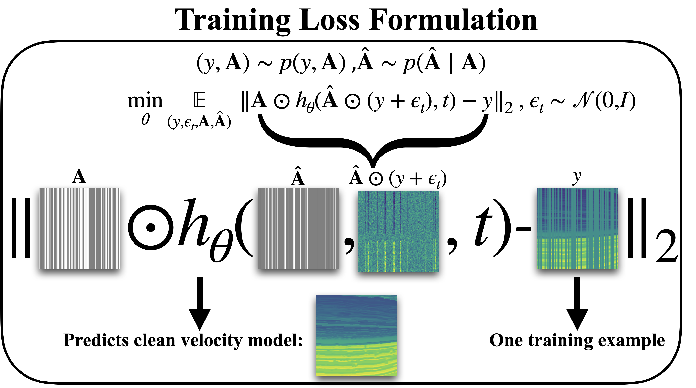
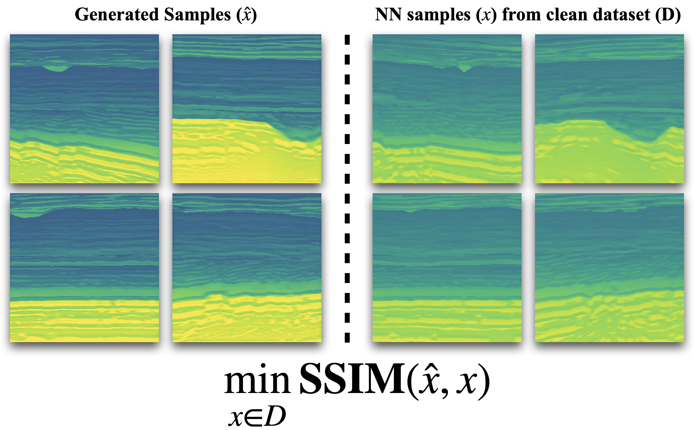

Building Subsurface Velocity Priors from Field Observations
Creating priors from field observations.
![]()
\[ \newcommand{\pluseq}{\mathrel{+}=} \]
Abstract
Diffusion generative models are emerging powerful frameworks for learning high-dimensional distributions and tackling inverse problems. However, their efficacy in training predominantly hinges on the availability of complete, high-quality datasets, a condition that often proves unattainable, particularly in the domain related to subsurface velocity model generation. In this work, we propose to synthesize subsurface velocity priors from incomplete models (field observations) by integrating additional observation distortions during the training phase and formulating a supervised loss objective. Our approach facilitates the generation of realistic, full velocity samples utilizing a dataset composed merely of 40% complete velocity models. Moreover, our model demonstrates resilience against overfitting, a common pitfall in many generative models, and ensures the production of original models that are congruent with actual, clean velocity models.
Method
Seismic velocity synthesis is an ill-posed problem, and acquiring comprehensive realistic datasets is costly. Generative models, particularly diffusion models, offer a solution by training priors to synthesize plausible samples. These models approach synthesis through a denoising process, facilitating high-quality generation within high-dimensional spaces. Our work leverages diffusion models to construct priors from only partial velocity information, showcasing their efficiency in generating geophysically sound velocity samples.
For our training dataset, we utilize 2D proxy velocity models (with dimensions of depth and width both at 1600m) that reflect the geological characteristics south of the North Sea. These models are derived from 3D imaged seismic and well-log data, featuring realistic heterogeneity. To simulate authentic field conditions, we apply a column-wise random masking (\(\mathbf{A}\)) to 60% of the velocity data within these 2D models, resulting in a dataset comprising 3,000 instances.
In our training process, the absence of complete velocity models precludes the use of a conventional L2 denoising loss formulation. Drawing inspiration from (G. Daras and Klivans 2023), our study adopts an alternative approach by introducing distortion into the already column-wise masked velocity models (\(\mathbf{\hat{A}}\)). This approach crafts a supervised learning objective where the denoising model is not only tasked with denoising but also with inpainting missing pixels, utilizing the distorted and masked velocity models as inputs. Figure 1 illustrates the conceptual framework of the loss objective and delineates the inputs for the denoising network, which is charged with the generation of clean velocity models. Denoising model is trained for 20000 iterations on 2 A100 GPUs for \(\approx\) 4 days.

Results
In Figure 2, displayed on the left, we observe four distinct synthesized velocity images produced by the trained diffusion model. The results show that the model can capture long range structures in the training survey area and extrapolate missing information in input images and produce realistic looking samples. The sampling process is fast and requires 20s per sample on a GPU. Additionally, we identified the nearest neighbor samples corresponding to synthesized velocities. We can clearly see even among the most similar samples, there are discernible differences in structure, demonstrating the model’s robustness against overfitting. The future work aims to enhance the generation of these velocity priors by pushing the boundaries further and utilizing even fewer field observations and seismic images, such as Reverse Time Migration (RTM) techniques.

Significance
We employed diffusion models to generate realistic subsurface velocity samples. While previous efforts that relied on synthesis from fully complete velocity examples, our approach successfully generates high-quality, realistic samples from only 40% complete 2D slices. Empirical evidence demonstrates our network’s ability to circumvent the common issue of overfitting observed in many generative models. The velocity models produced by our method hold significant value for downstream tasks in reservoir engineering and various other applications that require the generation of multiple plausible velocity models.
Additional material is available at https://slimgroup.github.io/IMAGE2024/.
Acknowledgement
This research was carried out with the support of Georgia Research Alliance and partners of the ML4Seismic Center.